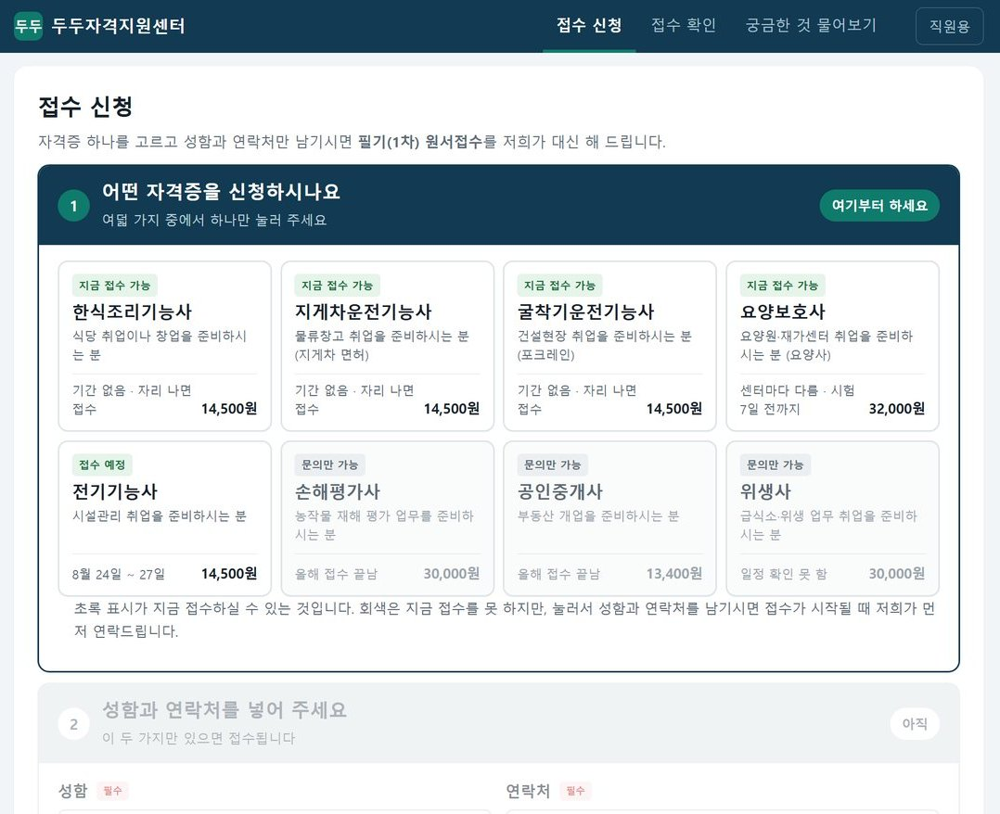
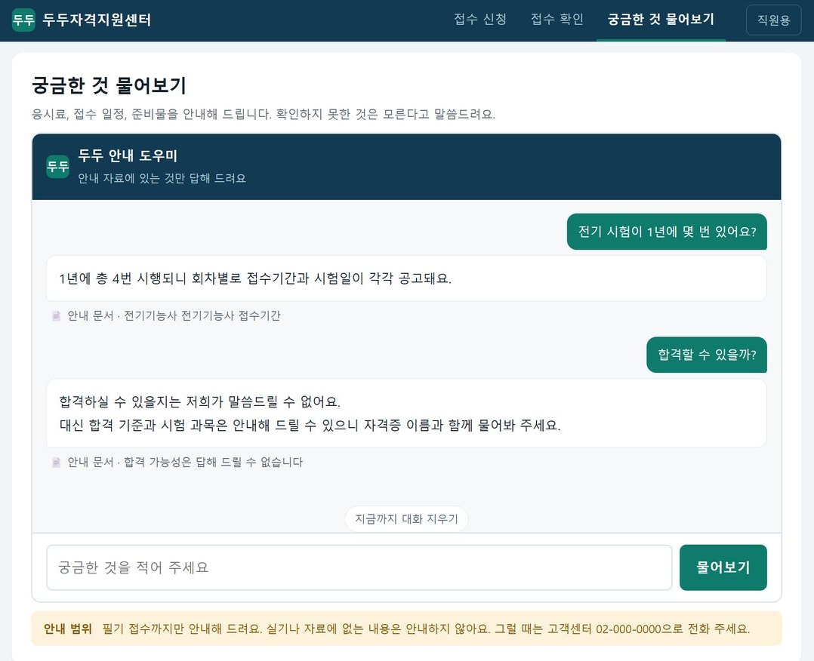
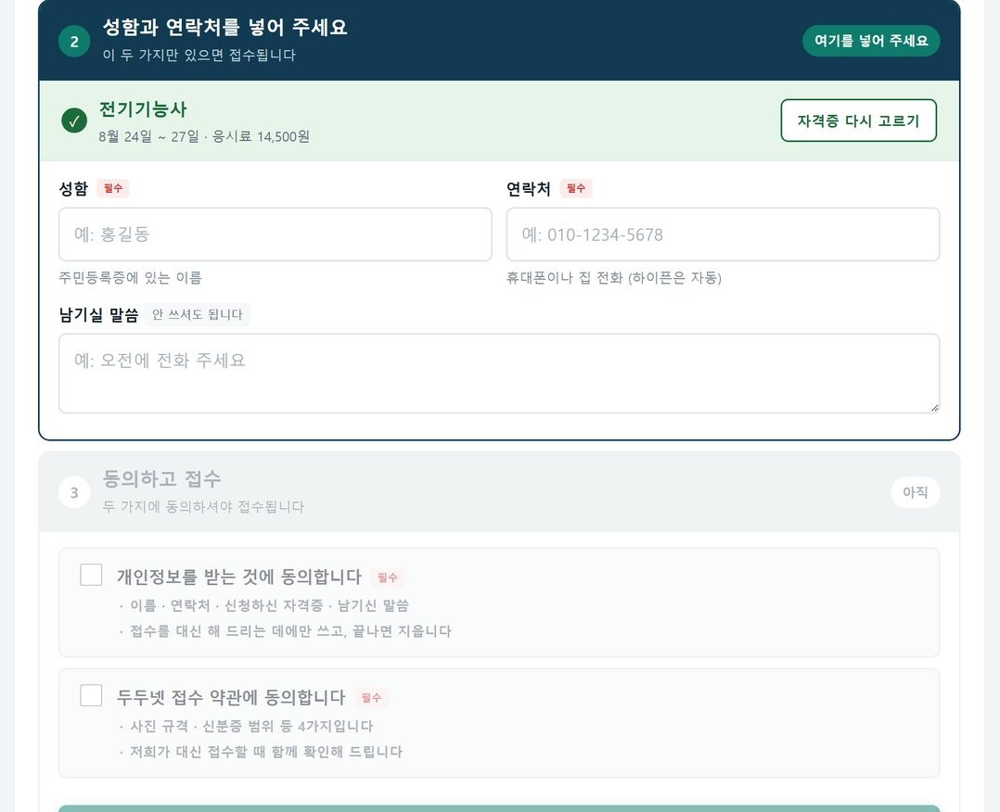
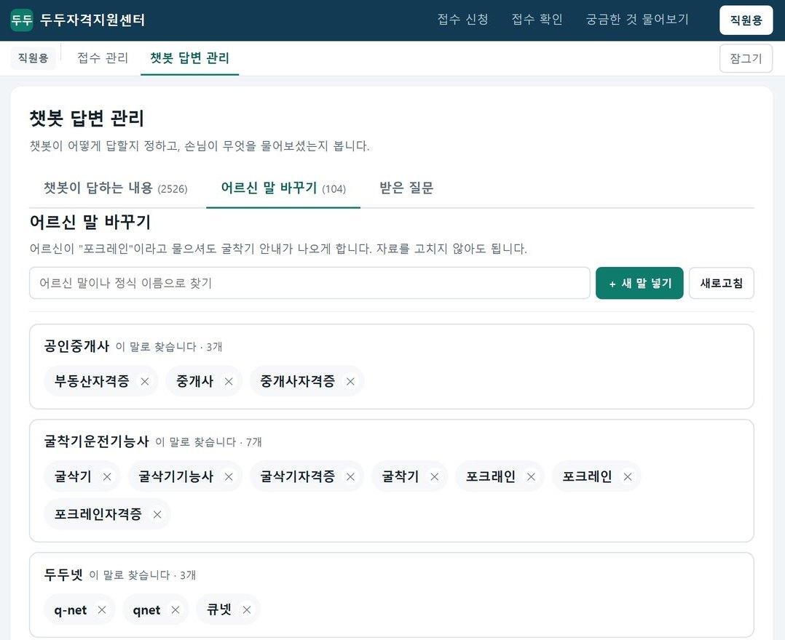
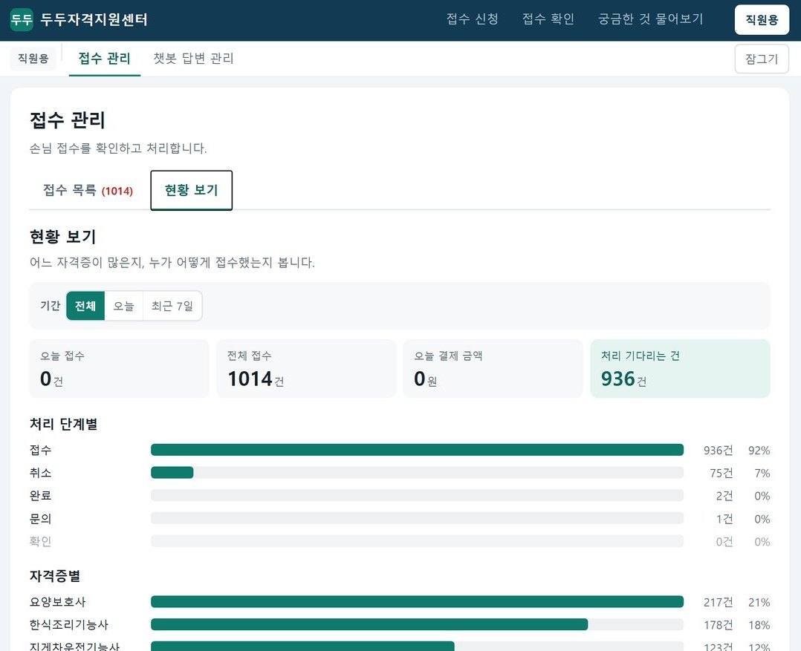

시니어 자격증 접수와 질문 챗봇
어르신이 자격증 필기시험을 접수하고, 궁금한 것을 챗봇에 물어보는 웹 서비스입니다. 센터 직원이 접수를 관리하고 챗봇의 답을 고치는 화면도 함께 만들었습니다.


- 구분
- 멀티캠퍼스 AI 프로덕트 매니저 트랙 · 미니 프로젝트
- 역할
- 강사가 준 의뢰 문서·자료·기본 프롬프트로 기획·제작
- 기간
- 2026.08.19~20 (2일)
- 도구
- Supabase · Vercel · Gemini · Claude Code
- 결과
- 어르신 화면 셋 · 직원 화면 둘 · 기관 세 곳 접수 자료 1,000건을 한 표로 통합
입력 칸을 세 개로 줄였습니다
첫날 저녁, 어르신 입장에서 접수 과정을 처음부터 끝까지 따라가며 테스트했습니다. 다섯 가지 상황 중 세 가지에서 "입력 칸이 너무 많다"는 문제가 나왔습니다. 의뢰 문서에는 이름과 연락처만 받으라고 되어 있었습니다. 그런데 나중에 받은 다른 자료를 보고 칸이 늘어난 것이 문제였습니다. 그래서 어르신 화면은 자격증·성함·연락처 세 칸으로 줄이고, 회차·감면·결제 같은 나머지 칸은 직원 화면으로 옮겼습니다.

자료를 늘리자 챗봇이 틀리기 시작했습니다
안내 자료가 25개일 때는 잘 맞던 챗봇이, 상담 기록 4,705건을 정리한 2,495개를 넣자 질문 40개 중 1개만 맞혔습니다. "시험"이라는 말이 시험장, 시험비, 시험일에 모두 걸렸기 때문입니다. 그래서 "시험"처럼 어디에나 나오는 말은 덜 중요하게 보고, 질문에 나온 자격증부터 먼저 찾게 고치자 29개를 맞혔고, 틀린 답은 없어졌습니다. 나머지는 어느 자격증인지 되묻는 답이었습니다. 이후 어르신들이 쓰는 표현을 더 넣고 분류를 다시 정리해 36개까지 맞혔습니다.
어르신이 쓰는 말은 직원이 고칠 수 있게 했습니다
"포크레인"이라고 물어도 굴착기 안내가 나오게 하는 표현 사전은 처음에 파일 안에 있었습니다. 그래서 개발자만 고칠 수 있었습니다. 담당자가 바뀌면 손댈 사람이 없어지기 때문에, 직원이 화면에서 직접 넣고 지울 수 있게 바꿨습니다. 챗봇이 답하지 못한 질문 기록도 같은 화면으로 옮겼습니다. 직원은 못 찾은 질문을 보고 바로 옆 탭에서 표현을 더할 수 있습니다.

남의 접수번호가 보이지 않게 했습니다
접수 화면에는 같은 사람이 두 번 접수하면 이미 접수했다고 알려 주는 안내가 있었습니다. 수강생끼리 서로 써 보는 테스트에서 이 안내가 좋다는 말이 여러 번 나왔습니다. 그런데 개인정보 문제가 될 수 있다는 지적도 함께 나왔습니다. 안내에 접수번호까지 보여 주고 있어서, 성함과 연락처만 알면 남의 접수번호를 알아낼 수 있었습니다. 그래서 접수번호는 빼고 접수한 날짜만 보여 주게 고쳤습니다.
